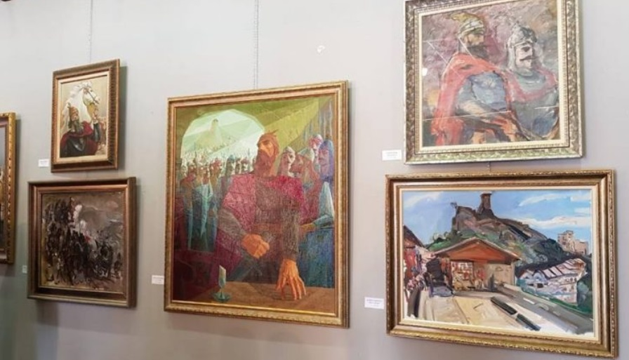
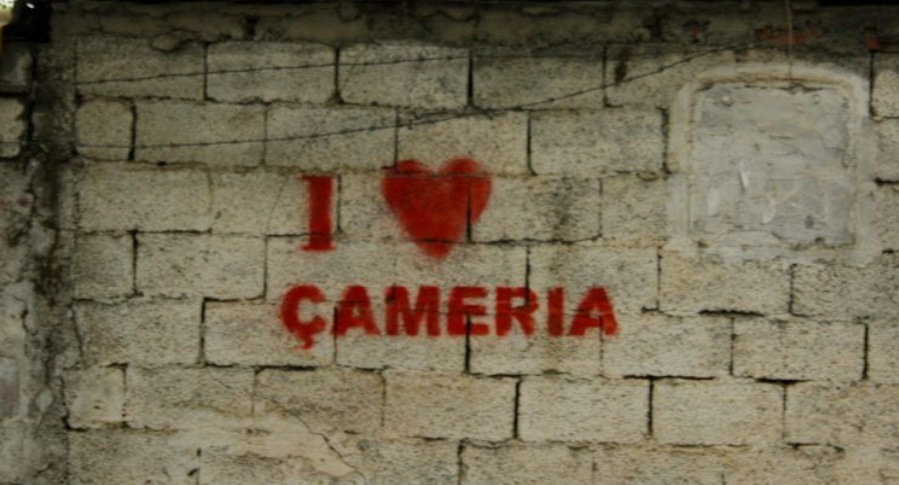
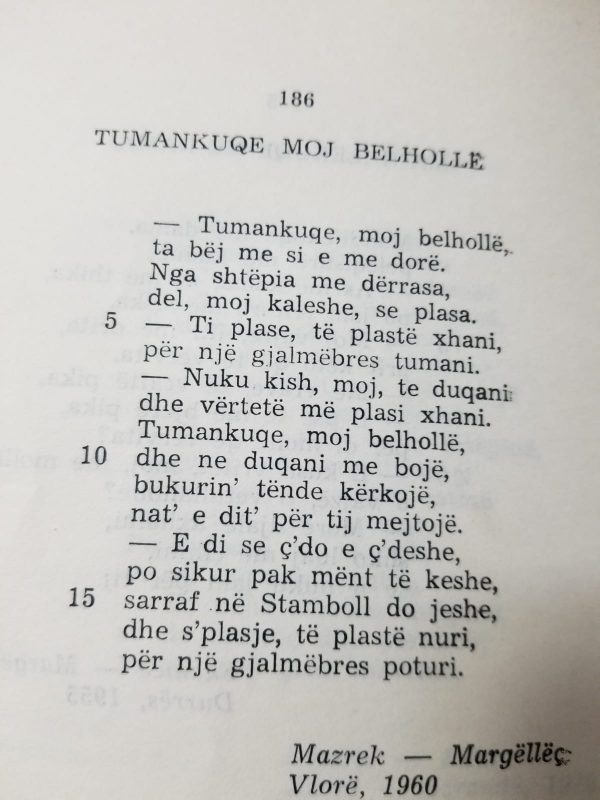
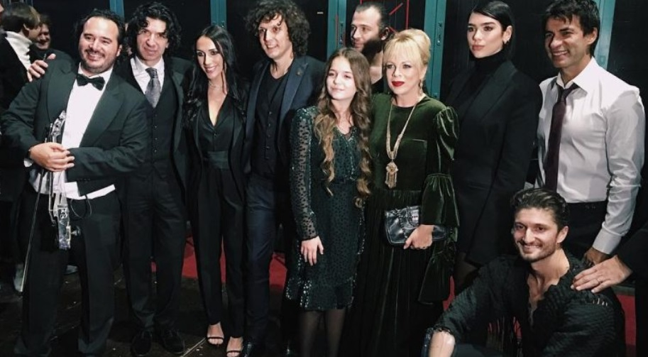

Skënderbeu përmes 54 piktorëve
“Kruja dhe Skënderbeu” quhet ekspozita e hapur në ambientet e Muzeut Historik Kombëtar.
Këto piktura janë të vendosura në ekspozitë për publikun.
Më shumë
Në këtë ekspozitë marrin pjesë 54 piktorë nga Shqipëria, Maqedonia dhe Kosova, të cilët kanë hedhur në telajo impresionet e tyre për Heroin Kombëtar të Shqiptarëve, Gjergj Kastriotin Skënderbeun. “Përvjetori i sivjetshëm i 550-vjetorit të vdekjes së Skënderbeut na risjell sërish në vëmendje figurën e tij poliedrike, si strateg dhe udhëheqës i shquar, sepse figura e tij nuk mbeti vetëm si një imazh, por është futur thellë në vetëdijen dhe ndërgjegjen e popullit shqiptar. Kjo krenari e trashëguar nga mesjeta u rishfaq dukshëm në Vitin Mbarëkombëtar të Gjergj Kastriotit Skënderbeut dhe ka shërbyer për forcimin e identitetit kombëtar të shqiptarëve. Angazhimeve të marra nga qeveria shqiptare për të kremtuar vitin 2018 si vitin e Skënderbeut, i janë bashkuar edhe 54 piktorët më të mirë nga trevat mbarëshqiptare, të cilët kanë sjellë punimet e tyre në ekspozitën ‘Kruja dhe Skënderbeu’, që përurojmë sot. Ky vit pati prurje të mëdha përsa i përket vlerësimit të figurës së Gjergj Kastriotit Skënderbeut”, tha drejtori i Muzeut Historik Kombëtar Dorian Koçi.

Versioni origjinal i “Tumankuqes”, i panjohur më parë
Mjaftojnë vetëm notat e para dhe gjithkush e dallon se bëhet fjalë për “Tumankuqen”.Tani do të shohim versionin e mëposhtëm.
Më shumë
Por, teksti origjinal i këngës më të njohur çame është shumë i ndryshëm nga ai që njohim deri më sot. Folkloristi i mirënjohur Fatos Mero Rrapaj ka sjellë shumë kohë më parë versionin origjinal të “Tumankuqe moj belhollë”, tekst i botuar në vitin 1960. 

“Salvator Mundi” e Leonardo Da Vincit shitet për 450 milion…
Vepra e artit më e shtrenjtë në histori.“Salvator Mundi”, piktura e famshme e Leonardo da Vinçit u shit për 450 milion dollarë në ankand.
Më shumë
Listën deri më 2015 e kryesonte ‘Interchange’ e Willem De Kooning, me 300 milion dollarë.Leonardo u ekspozua për herë të fundit në National Gallery të Londrës, para ankandit të organizuar nga shtëpia e ankandeve Christie’s. Tabloja përfaqëson Krishtin, dhe prej kohësh ishte konsideruar si një kopje, derisa ekspertët provuan origjinalitetin e saj.Ajo posedohej nga një koleksionist privat, para se të nxirrej ne ankand mbrëmjen e djeshme. “Të paktën 20 tablo të Leonardo da Vinçit ekzistojnë edhe sot”, sipas shtëpisë së ankandeve “Christie’s”. Me përjashtim të ‘Salvator Mundi’, të gjitha janë në pronësi të muzeve apo institucioneve.

Dua Lipa, Ramë Lahaj, Inva Mula, Elhaida Dani e Ermal Meta kënduan së bashku “Luleborë”
Të hënën është mbajtur një koncert i madh recital në Teatrin “Argentina” të Romës.
Më shumë
Zërat më të mirë shqiptarë kanë kënduar në nderim të figurës së madhe heorike shqiptare, Gjergj Kastrioti – Skënderbeu. Me rastin e 550 vjetorit të vdekjes së Skënderbeut – Dua Lipa, Ramë Lahaj, Inva Mula, Ermal Meta, Elhaida Dani, Genc Tukiçi, Erza Muçolli e shumë të tjerë kënduan këngë të njohura para publikut. E entuziazmuar që këndon shqip shihet Dua Lipa, këngëtarja shqiptare me famë botërore, e cila ka arritur majat në tregun ndërkombëtar të muzikë. Në fund të koncertit, ata janë mbledhur të gjithë së bashku, dhe kanë kënduar para publikut këngën e famshme “Luleborë”. “Do e mbaj mend diten e djeshme si nje dite plot emocione. Ishte nje nder te isha e ftuar ne kete event dhe te ndaja skenen me ju! Faleminderit Ambasades Shqiptare ne Vatikan, per ftesen dhe organizimin e ketij eventi ne kuader te vitit te Skenderbeut”, ka shkruar Elhaida Dani në mbishkrimin e videos.